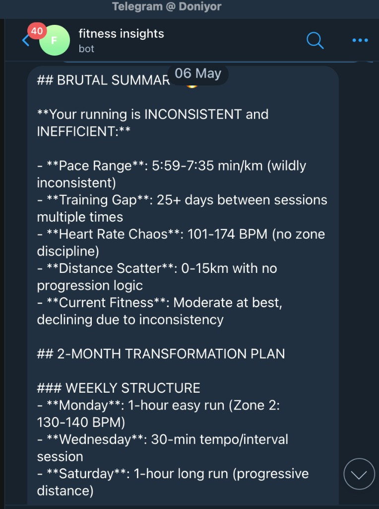

Telegram Claude Fitness Assistant
Tools: TypeScript · Node · Telegram Bot API · Supabase (SQL migrations) · Claude · Strava (full sync) · OAuth scaffolds (Oura, TrainingPeaks) · Garmin Connect (community library path) · Docker
A Telegram-first assistant that pulls normalized workout data into Supabase, keeps provider tokens orderly, and routes free-text questions to Claude with recent activity as context — so answers are grounded rather than generic training advice.
Users run /connect flows for providers, /today kicks a sync loop, and
deployment is aimed at Railway/Render/Fly with a Dockerfile: set BASE_URL, restart so the
webhook registers, and Strava-backed accounts get the strongest end-to-end story (Garmin documented with
trade-offs where public OAuth does not exist for individuals).
